Physics Open House 2024
Te mostramos algunos de los momentos más destacados del evento

Participantes

Comité Organizador

Recreación


El Physics Open House es un evento académico de divulgación donde estudiantes presentan sus mejores proyectos de asignaturas como Física I y II, Nanotecnología y más. Está dirigido a la comunidad universitaria y al público general, con el fin de despertar la curiosidad científica, y fortalecer el intercambio de ideas.
Para presentar tu proyecto en el Physics Open House 2025, por favor completa el siguiente formulario:
Ir al formulario de registro| ID | Póster | Información del Póster |
|---|---|---|
1 |

|
Ponentes: Marck Anthony Chiza Segovia, Lander Xavier Lliguicota López, Marlon Ismael Punguil Chicaiza Escuela: Yachay Tech Diseño e Implementación de Circuito para Transmisión en Banda FMEn este trabajo se explora el fenómeno de la Modulación en Frecuencia (FM) como una aplicación práctica de la teoría de ondas estudiada en Física II. Este proyecto se enfoca específicamente en la generación, transmisión y recepción de señales FM. A través del diseño de un transmisor sencillo, se analiza cómo las variaciones en la frecuencia permiten codificar información y cómo este método de modulación ofrece ventajas como mayor fidelidad y resistencia al ruido. El objetivo es vincular los conceptos teóricos del comportamiento ondulatorio con sistemas reales de comunicación, destacando la FM como una base fundamental del procesamiento de señales analógicas. |
2 |
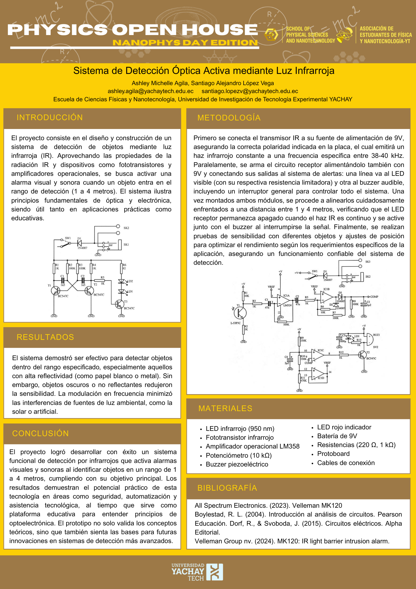 |
Ponente: Santiago Alejandro Lopez Vega, Ashley Michelle Agila Escuela: Yachay Tech Sistema de Detección Óptica Activa mediante Luz InfrarrojaEl proyecto consiste en un sistema de detección de objetos mediante luz infrarroja, que activa alarmas visuales y sonoras cuando un objeto se encuentra entre 1 y 4 metros. Usa un LED IR, un fototransistor y un amplificador operacional. Fue efectivo con objetos reflectantes y resistente a interferencias externas. Es útil en seguridad, automatización y como herramienta educativa en optoelectrónica. |
3 |
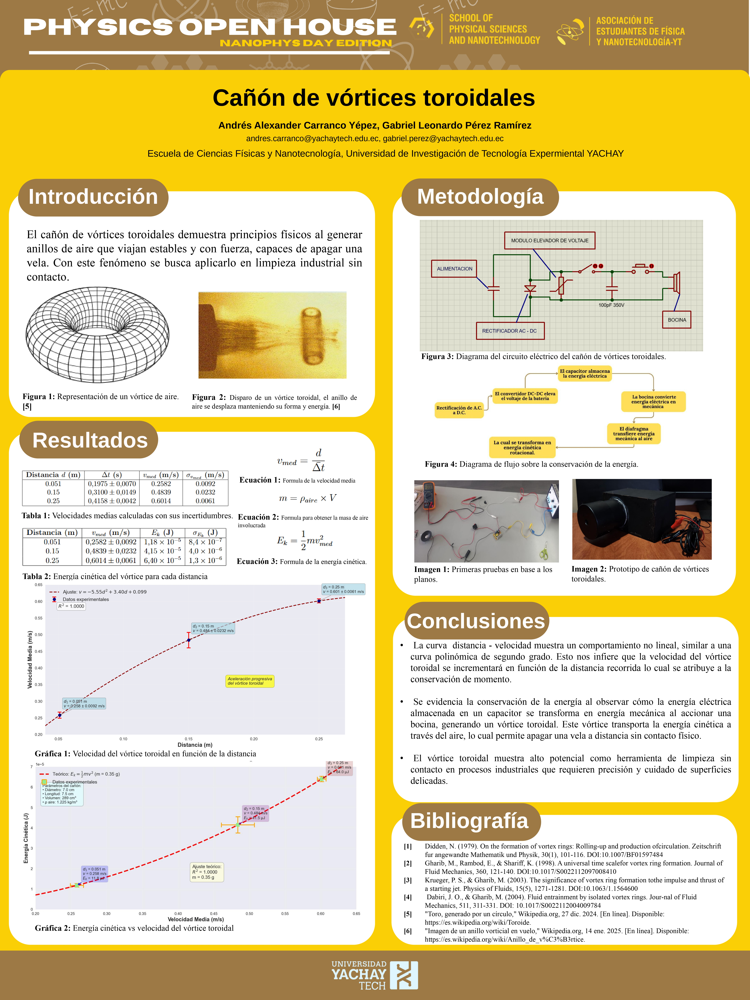 |
Ponente: Andrés Alexander Carranco Yépez, Gabriel Leonardo Pérez RamÍrez Escuela: Yachay Tech Cañón de Vórtices ToroidalesSe diseñó y construyó un cañón de vórtices toroidales capaz de apagar velas a distintas distancias, demostrando la conversión de energía eléctrica en cinemática y su potencial aplicación en limpieza sin contacto. |
4 |
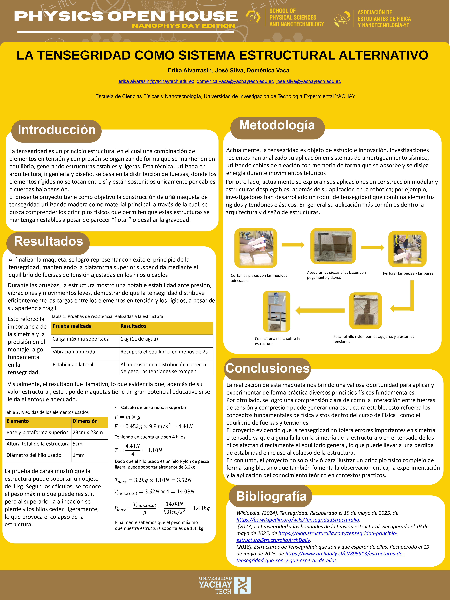 |
Ponente: Domenica Vaca, Erika Alvarrasin, José Silva Escuela: Yachay Tech La tensegridad como sistema estructural alternativoEste proyecto demuestra cómo los principios físicos y geométricos pueden aplicarse en prototipos simples, visualmente llamativos y funcionalmente sólidos. La estructura creada consta con una base de 23x23 cm y una altura total de 50 cm y emplea el principio de tensegridad, donde los elementos rígidos (madera) están en compresión y se mantienen en equilibrio gracias a cables en tensión. Se realizó una metodología basada en una revisión del estado del arte de tensegridad, destacando sus aplicaciones recientes en arquitectura y robótica. Luego se procedió al diseño, corte, ensamblaje y tensado de los elementos, asegurando el equilibrio estructural. |
5 |
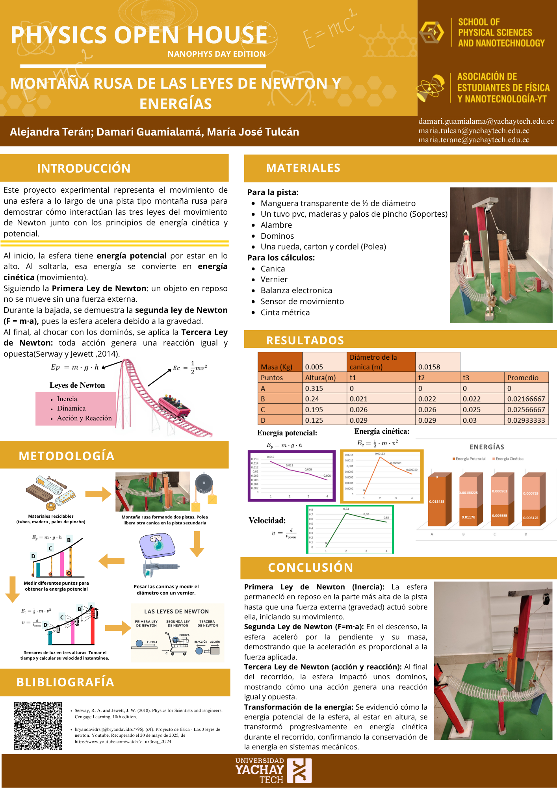 |
Ponente: María Alejandra Terán Endara, Maria José Tulcán Mera, Damari Jerlin Guamialamá Armas Escuela: Yachay Tech Leyes de Newton y Energía cinética/potencialMaqueta tipo montaña rusa que demuestra las 3 de Newton, además de sacar datos para calcular la energía cinética a lo largo del recorrido. |
6 |
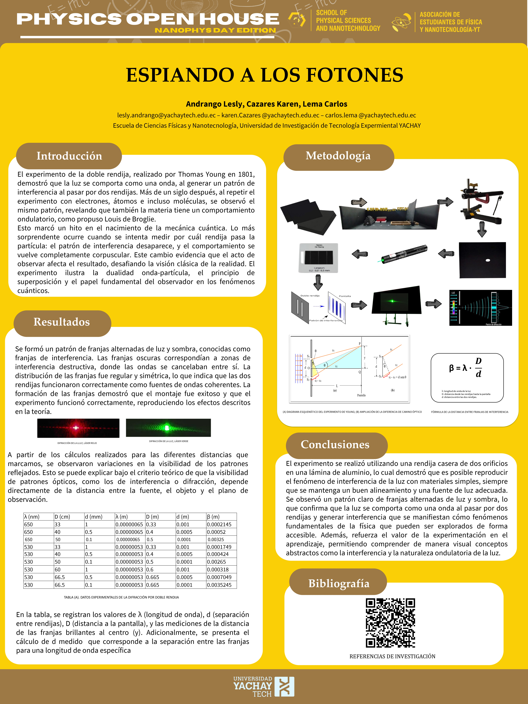 |
Ponente: Lesly Sayana Andrango Morán, Carlos Steven Lema Reinoso, Cazares Navarrete Karen Jasmin Escuela: Yachay Tech ÓPTICA - Espiando a los fotonesExperimento clásico de la doble rendija utilizando una rendija casera hecha en una lámina de aluminio y fuentes de luz láser de diferente longitud de onda. El objetivo fue observar interferencia de la luz, un fenómeno que demuestra su comportamiento ondulatorio. Durante el experimento se logró proyectar patrones de franjas claras y oscuras sobre una pantalla, los cuales se originan por la interferencia constructiva y destructiva de ondas coherentes. Se registraron mediciones como la longitud de onda de la luz, la distancia entre rendijas y la distancia a la pantalla para calcular el ancho de las franjas de interferencia (β). |
7 |
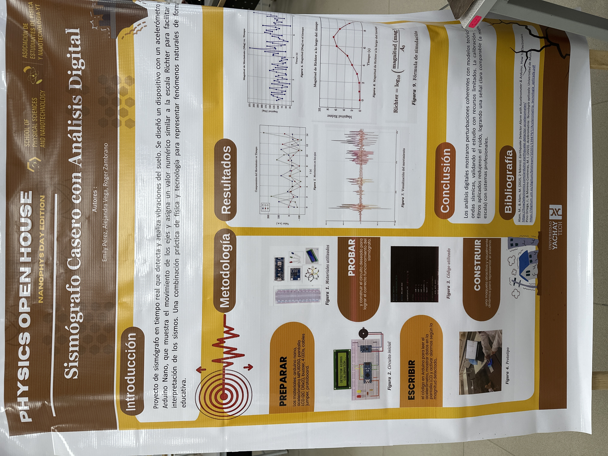 |
Ponente: Emily Poleth Pérez Román, Paula Alejandra Vega Vega, Roger Zambrano Escuela: Yachay Tech Sismógrafo casero con análisis digitalUn sismógrafo de bajo costo con una simulación de la escala de Ritcher con sistema de alertas visuales y auditivas. |
8 |
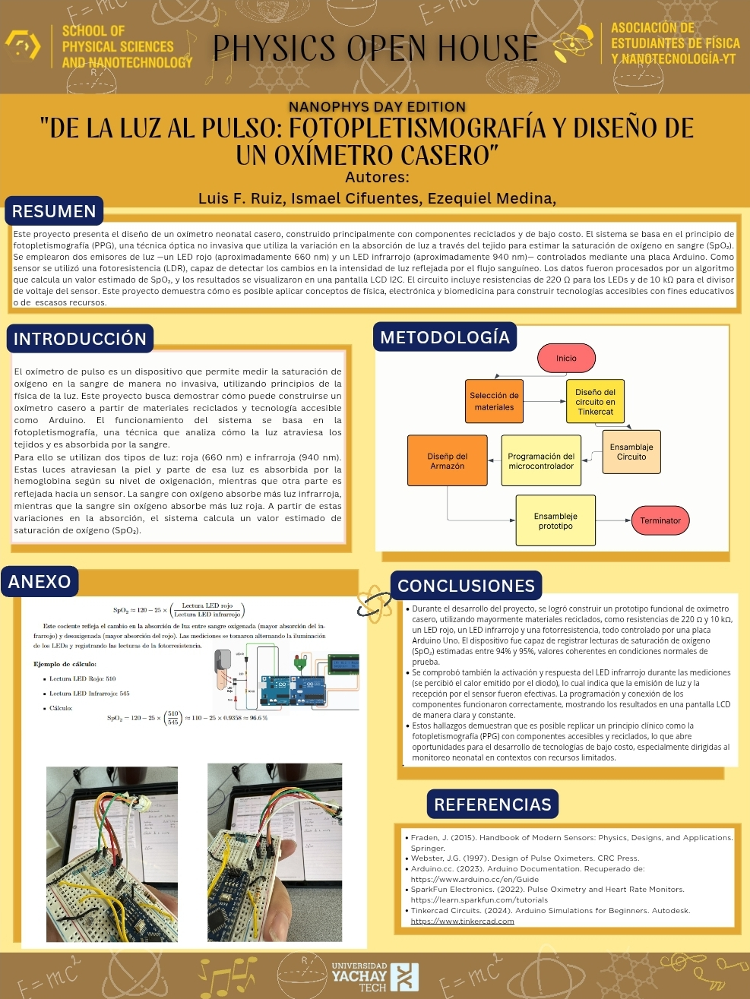 |
Ponente: Luis Fernando Ruíz Guevara, Ismael Xavier Cifuentes Carvajal, Ezequiel Emmanuel Merino Estrella Escuela: Yachay Tech Oxímetro DigitalEn este proyecto presentamos el diseño y construcción de un oxímetro de pulso neonatal funcional, elaborado con materiales reciclados y una placa Arduino, como una propuesta accesible y educativa ante una necesidad real en el sistema de salud ecuatoriano. En Ecuador, los oxímetros diseñados para recién nacidos son escasos, costosos o directamente inexistentes en muchas unidades de salud rurales. Esto representa un riesgo crítico, ya que estos dispositivos permiten detectar a tiempo problemas respiratorios en bebés, salvando vidas en sus primeras horas de vida. Frente a esta problemática, nuestro equipo decidió desarrollar una alternativa económica y funcional, combinando conocimientos de Física II, electrónica y programación. El dispositivo utiliza el principio de fotopletismografía, a través de LEDs rojo e infrarrojo y una fotorresistencia, para medir la saturación de oxígeno (SpO₂) y el pulso cardíaco. El prototipo alcanzó lecturas dentro del rango fisiológico esperado, demostrando su viabilidad como herramienta de uso educativo y social. Además del aporte técnico, este proyecto busca generar conciencia sobre la sostenibilidad y la salud pública, promoviendo la reutilización de componentes electrónicos y mostrando cómo la ciencia puede convertirse en una solución concreta ante desafíos reales. Con este trabajo queremos demostrar que desde el aula se pueden crear proyectos con propósito, capaces de transformar necesidades en oportunidades, y despertar vocaciones científicas con un enfoque humano. |
9 |
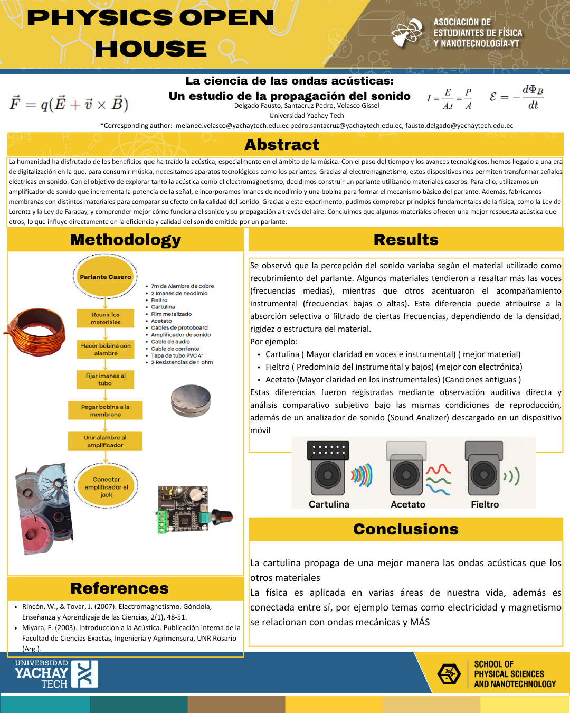 |
Ponente: Gissel Velasco Cruz, Fausto Xavier Delgado Quezada, Pedro Santacruz Alvarez Escuela: Yachay Tech Ondas Sonoras y electromagnetismoExperimentación y análisis de diferentes tipos de membrana que pueden colocarse en un parlante casero. Partiendo desde leyes electromagnéticas hasta ondas mecánicas. Análisis de calidad de audio, potencia y demás características sonoras utilizando la observación auditiva directa. |
10 |
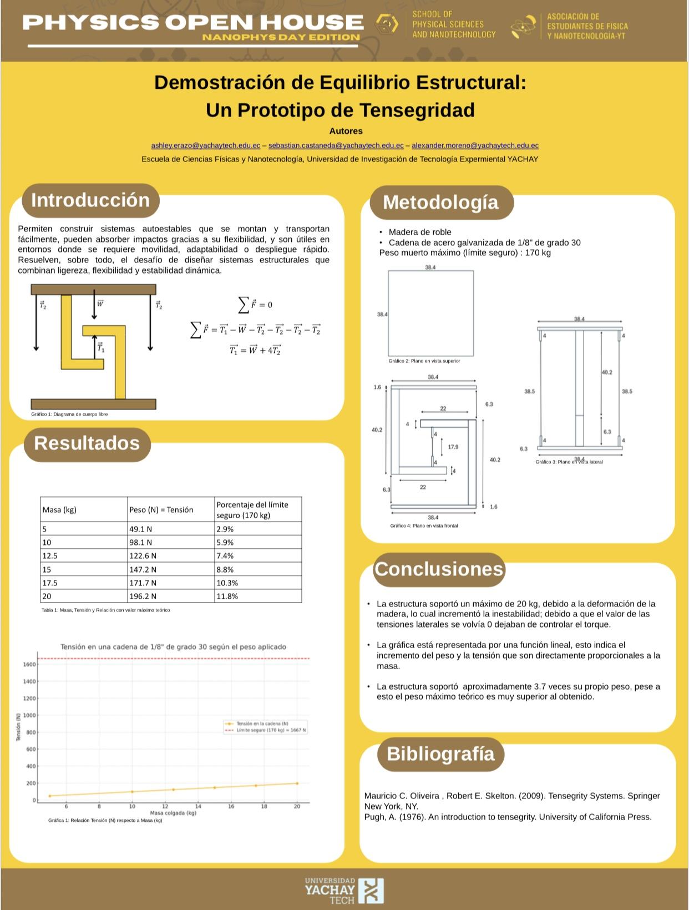 |
Ponente: Sebastian Camilo Castañeda Cedeño, Ashley Mariú Erazo Vallejos, Dario Alexander Moreno Caiza Escuela: Yachay Tech TensegridadPrototipo y demostración de una estructura de tensegridad. |
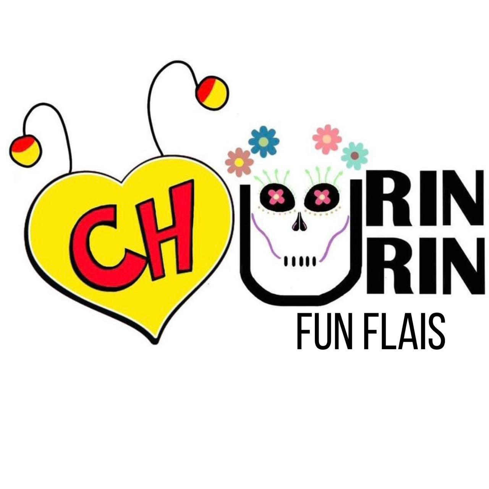


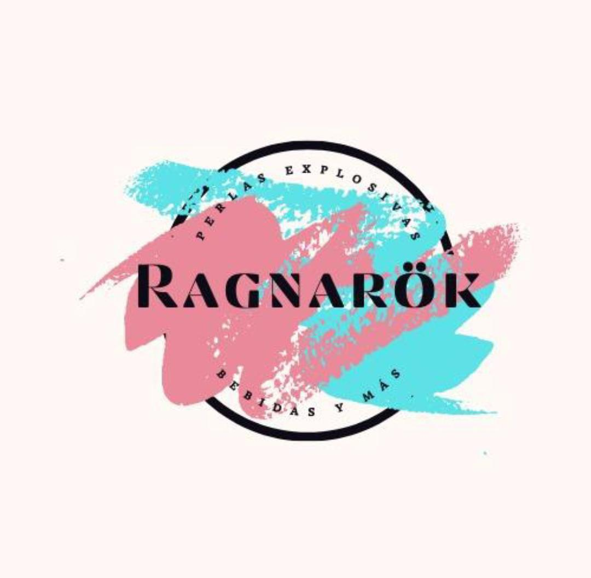